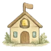
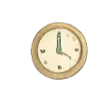
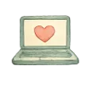
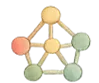
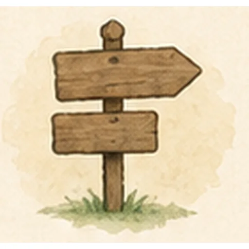
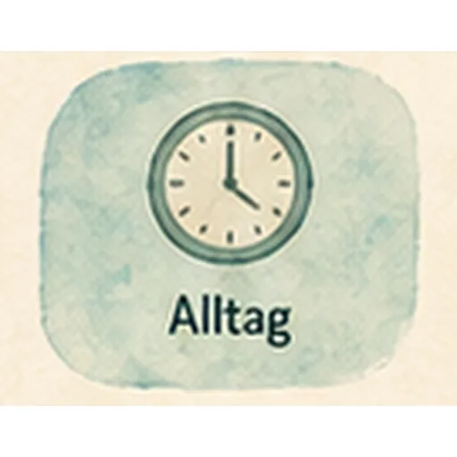

Angebote,
die zu eurem Alltag passen.
Jede Familie, jedes Kind und jede Situation ist einzigartig. Ich begleite Kinder, Jugendliche, Eltern, Familien und Väter dabei, neue Wege zu finden: verständnisvoll, alltagstauglich und mit klarem Blick auf das Wesentliche.
Mit besonderem Fokus auf Autismus, PDA und herausfordernde Dynamiken. ♡

Angebote, die zu eurem Alltag passen.
Jede Familie, jedes Kind und jede Situation ist einzigartig. Ich begleite Kinder, Jugendliche, Eltern, Familien und Väter dabei, neue Wege zu finden: verständnisvoll, alltagstauglich und mit klarem Blick auf das Wesentliche.
Mit besonderem Fokus auf Autismus, PDA und herausfordernde Dynamiken. ♡

Meine Angebote im Überblick

Ich schaue mit euch auf das, was gerade wichtig ist, und begleite Kinder, Jugendliche und Familien in herausfordernden Phasen.
• Stärkung von Beziehung und Bindung
• Stärken entdecken und nutzen
• Lösungen entwickeln, die im Alltag tragen

Elternsein ist wunderbar – und manchmal herausfordernd. Ich unterstütze euch dabei, Sicherheit im eigenen Handeln zu gewinnen.
• Grenzen, Regeln und Verbindung im Blick behalten
• Entlastung im Familienalltag finden
• Selbstfürsorge als Elternteil stärken

Wenn Verhalten zur Belastung wird, braucht es Verständnis statt Bewertung und hilfreiche Strategien statt Druck.
• Gewaltfreie Kommunikation und Deeskalation
• Individuelle, alltagstaugliche Lösungen entwickeln
• Schritt für Schritt zu mehr Kooperation

Neurodiversität ist keine Störung, sondern eine andere Art, die Welt zu erleben. Ich helfe, Autismus und PDA besser zu verstehen.
• Anpassung von Alltag, Schule und Umfeld
• Unterstützung bei Diagnostik und Nachgesprächen
• Verbindung statt Anpassungsdruck

Väter wollen präsent sein – und ihren eigenen Weg finden. Ich begleite dabei, den Platz in der Familie zu stärken.
• Bindung und Beziehung gestalten
• Vereinbarkeit von Familie, Beruf und Ich
• Ehrlicher Austausch ohne Bewertung

Professionelle brauchen Räume zum Verstehen, Verarbeiten und Weiterentwickeln. Ich unterstütze Teams praxisnah und lösungsorientiert.
• Teamtage und Prozessbegleitung
• Fachinput zu Autismus, PDA und Beziehung
• Entwicklung eines stärkenorientierten Miteinanders

Wissen, das bewegt – Impulse, die bleiben. In Vorträgen, Workshops und Fortbildungen vermittle ich fundiertes, praxisnahes Wissen.
• Themen z. B.: Co-Regulation, Umgang mit Wut, Übergänge gestalten, PDA im Alltag
• Für Eltern, Fachkräfte und Interessierte

Wie Begleitung aussehen kann
Jede Unterstützung ist so individuell wie die Menschen, die ich begleite. Das passende Format finde ich mit euch.

Vor Ort – in der Natur, zu Hause oder an einem neutralen Ort.
Kurzimpulse – für akute Situationen und schnelle Entlastung.
Längere Begleitung – über mehrere Wochen oder Monate.
Prozessbegleitung – bei Veränderungen, Trennungen, Umbrüchen oder Entwicklungsphasen.Immer mit dem Ziel: mehr Verständnis, mehr Verbindung und mehr handlungsfähige Lösungen für euren Alltag.
Typische Anliegen
Es gibt viele Gründe, warum ihr euch Unterstützung wünscht. Hier sind einige Themen, die mich häufig erreichen.






Was euch gerade bewegt, ist wichtig. Ich schaue es mit euch an.
Für wen ich da bin
Meine Angebote richten sich an Menschen, die Veränderung und Verbindung möchten.
in herausfordernden Phasen
mit besonderen Bedürfnissen und großen Gefühlen
auf der Suche nach sich und ihrem Platz
auf der Suche nach Halt und Klarheit
auf ihrem eigenen Weg in der Familie
Menschen, die Kinder und Familien unterstützen

Der nächste Schritt – ich begleite euch dabei.
Ob erste Fragen, akute Herausforderung oder der Wunsch nach Veränderung – ich freue mich, euch kennenzulernen und zu schauen, was euch jetzt weiterbringt.
Kontakt aufnehmen
Schreib mir – ich melde mich zeitnah zurück.
Danke für deine Nachricht!
Ich melde mich so bald wie möglich.
(Demo – es wurde noch nichts versendet.)